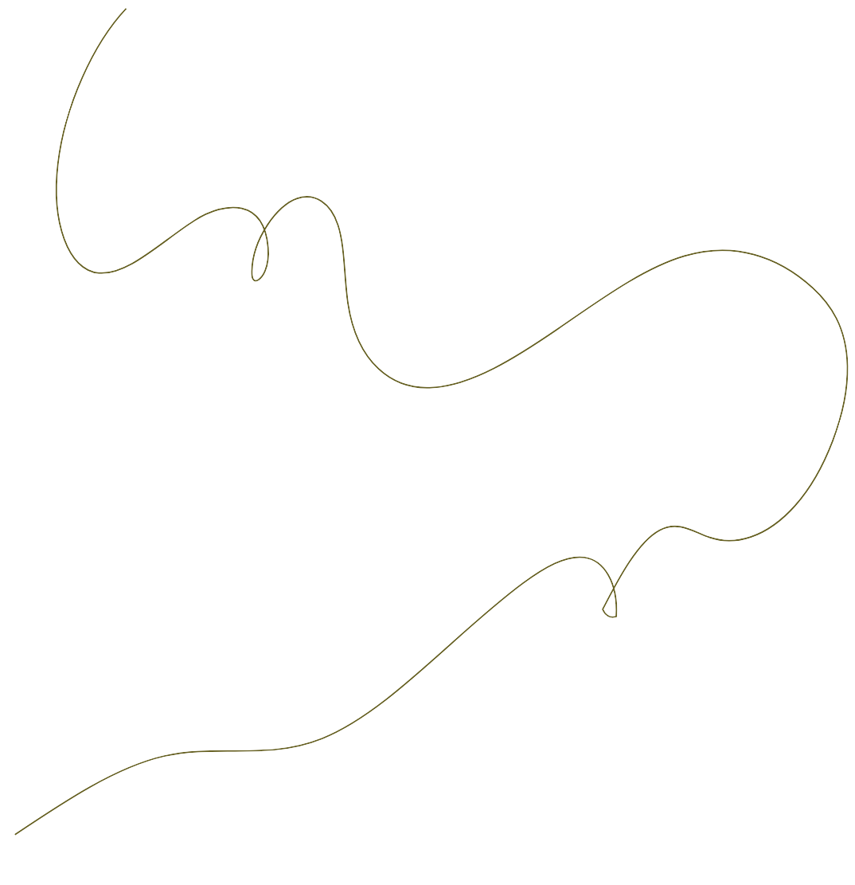

Historique

1991
Création
L'ASBL a été fondée en tant que maison d'accueil de petite
envergure pour les hommes et les femmes.
1996
Offre d'accompagnement
À partir de 1996, l'organisation a
commencé à proposer des services
d'accompagnement.
1998
Exploitation du fonctionnement de Puerto
En collaboration avec le CAW Bruxelles,
la Maison de la Paix a commencé à gérer
le fonctionnement de Puerto,axé sur
l'accompagnement résidentiel des sans-abri.
2006
Centre reconnu
d'accompagnement à domicile
En janvier 2006, l'ASBL a obtenu
la reconnaissance en tant que centre
d'accompagnement à domicile
avec pour objectif
le maintien du logement.
2017
Collaboration avec Station Logement
En 2017, la Maison de la Paix a établi une
collaboration avec Station Logement
centrée spécifiquement sur le Housing First,
appelée "Housing First Diogenes".
2023
Autonomie
À partir de 2023, l'ASBL Maison de la Paix est entièrement
autonome et exécute ses missions de manière indépendante.